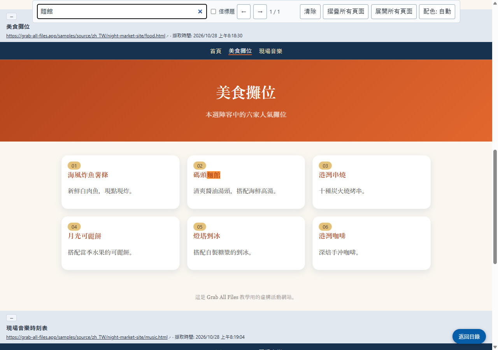

Grab All Files 的實際輸出
以原始外觀合併三個頁面，並附目錄和搜尋（Pro）
一個有自己配色與字體的虛構活動網站（首頁、美食攤位與現場音樂，共三個頁面），選用「保持原樣」與「附目錄及搜尋的HTML」，合併為單一 HTML 檔案。每個頁面都以原始設計放在框架中，上方標示來源網址與擷取時間。頂端的目錄可跳到各頁，搜尋框可同時搜尋三個頁面。
輸出檔案
開啟已儲存的 HTML 並搜尋「麵館」（由本網站擷取的畫面）

製作方式
- 來源頁面
- /samples/source/zh_TW/night-market-site/
- 擴充功能
- Grab All Files 5.8.31
- 瀏覽器
- Chrome 156.0.8078.48 (Windows 11)
- 方案
- Pro
- 製作日期
- 2026-10-28
- 設定
- 頁面：追蹤本頁的連結（3 頁）
- 外觀：保持原樣
- 輸出：附目錄及搜尋的HTML
- 圖片：離線儲存（預設）